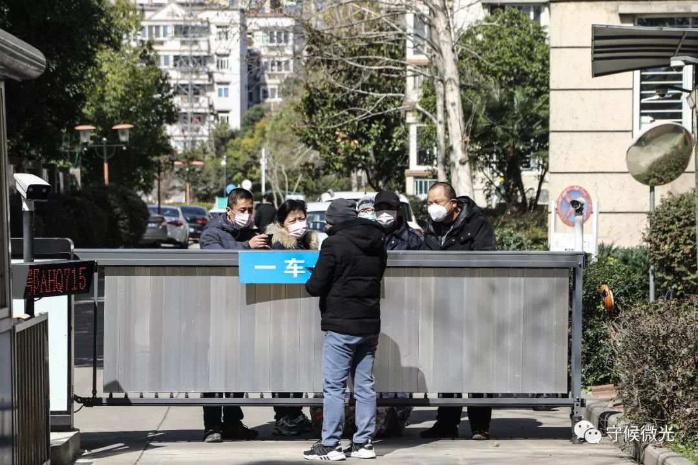
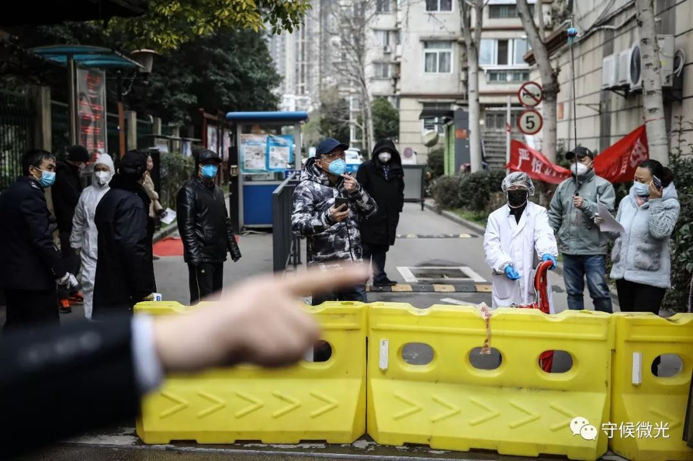
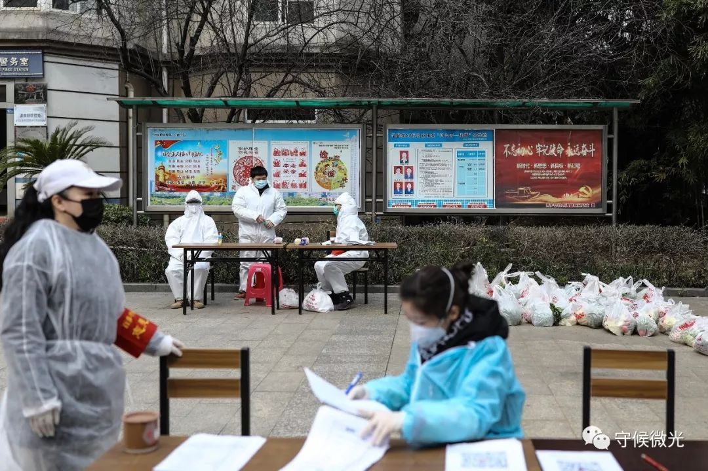

疫情之下，武汉市民的餐桌之战｜深度报道
原文链接 备份链接 记者/杨宝璐 实习记者/胡琪琛 *编辑/计巍 宋建华* 林楠做的登记表 2月11日，武汉开始实行小区封闭管理，宅家里抗疫的武汉居民不得不面对又一重困难：如何买到每天饭桌上需要的蔬菜。 城市几乎停摆，但生活却不能。吃饭问 …
若干年后回望，这一定是一段值得铭记的日子。因为新冠肺炎疫情，许多家庭无法团圆。疫情数据地图的每次刷新都令人揪心。我们和千万武汉人在一起，这不只是一句安慰，因为没有人能够置身事外。
之前，我们向用户征集这段时间的故事，鼓励大家写下属于自己的“武汉日志”。现在，我们挑选出其中的几篇，分享给大家。
医生们追求，有时去治愈、常常去帮助、总是去安慰。我们相信，尽可能分享有关此次疫情的事实，对他人就是一种安慰剂，能够帮助社会共克时艰。
如果你还有愿意记录下来的故事，欢迎继续发给我们，文字、图片、视频均可，如果您没有时间成文或拍摄，可提供线索并留下联系方式。
要求真实、原创，文字内容不少于1000字，发送时请注明署名及联系方式。
中国青年报社征集邮箱：wuhanstory@126.com

2月16日，湖北省武汉市，送菜小哥许可在为取单的小区居民摆放货品。中国青年报 赵迪/摄
作者 |平菲菲
（本文完成于2020年2月23日）
1月23日武汉封城，2月17日我们小区被封死。在那之后，我第一参与团购蔬菜，这次“团菜”的经历一波三折、跌宕起伏。
“团菜”之前，我赶在小区被封死的前一天，囤了一波蔬菜。2月21日，我粗略估计一下所剩还够吃4天，考虑到团购至少得2天才能到，于是从那天便开始关注小区群里的各种买菜团。有人发了中商团购套餐，跟着一起接龙，然后就没然后了。
正如鸡蛋不能全部放在一个篮子里，希望也不能只挂在一棵树上。于是赶紧再找其他，晚上哄孩子睡后，拿起手机打开盒马App，刚要下单，提示说快递小哥已约满，每天22:00开放第二天预约。看下时间，22点13分。群里的小伙伴说盒马基本2分钟内约光，想买要赶早。
22日上午，群里通知中商的团购“流团”了。于是我开始找各种团菜的小程序、App——美菜，当日对我们小区不开放，要等到24日。美团送菜上门，但各家店面一片黑，不开张。从头天晚上忙活到第二天早上，一无所获，我有点慌了。
终于在长江严选发现了有团购送货的，但要50份起送，头天下单，第二天送货。似乎看到救命稻草，想一把抓住。

2月18日，百步亭社区，居民在添加一名蔬菜商贩的微信。小区封闭后，通过网络订购和微信群团购蔬菜成了很多业主的选择。中国青年报 赵迪/摄
可是我们哪里有50人呢，于是我想自己做志愿者，当“团长”，拉个买菜群，相互组织起来互助共享。于是我建了个“长江严选买菜互助群”，群公告里写着：“特殊时期，让我们如大蒜般紧紧团结在一起，互帮互组、共渡难关”，从小区群里拉了几个人，互相拉人很快就到了60个人。
“团长”不好当。长江严选上的商家建议我们不从严选官方走，直接用一个叫做“农门镖局”小程序，送的快些。但这个小程序求要团长认证，还要申请成为“镖师”。这个程序把我直接劝退。
而从严选官方团也不容易。就拿接龙来说，大家自己群里复制粘贴按序号排，这样似乎最简单，但后期对接容易出问题，不规范，不方便商家直接对用户。于是知道了有接龙小程序。
接龙小程序刚了解个一二三，群里就在催着问买菜流程。这时候，很多问题就摆出来了，集中收费的问题，送到后接菜排号叫号的问题，不让聚集还要和物业联系，要物业帮忙协调位置、帮助发放的问题。到后来我发现我这问题都多想了，因为这个团不出意外也“流团”了——在长江严选18:00关闭平台前参与接龙的只有5个人。
组团失败了，一个下午心里有些不安，毕竟还没找到菜源，开始为未来一段时间的生活担忧。
无聊中又开始搜集各类团购信息，“美团——送菜上门”上，终于有一家鲜果蔬菜店点亮了。这次是真的救命稻草，接受预约，第二天中午送菜。但是品种很少，基本就是些绿叶蔬菜，买了几种，共138元。为这一单蔬菜，已经从21日忙活到22日。
后来，我们又在盒马和天猫超市鲜美菜场蹲守，打开App，基本看到什么选什么，赶在21：59装好购物车，整点即刻下单。终于都成功了，一阵欣喜，感觉未来一段时间的生活又有着落了。
刚准备休息，同小区一位宝妈拉我进一个更小的买菜群，说她和美菜的客户经理商量好了，拉够10个人，每人300元以上可以单独给我们开放平台团购一次，提前加入购物车，平台只开放4分钟。我欣然加入，团购了面粉和肉类。冻瘦肉40多元一斤，4斤起卖。还要经过4分钟的惊险抢购秒杀。此刻，下单成功的喜悦感远超物价上涨的“疼痛”感。
团购成功，取件也并非一帆风顺。第二天中午一点多，在美团和盒马买的东西基本同时到了，现在是无接触配送，货送到小区放在门岗的取货架上，快递员就走了。

2月19日，百步亭社区一家小区门外，居民等待领取在网络上订购的蔬菜。中国青年报 赵迪/摄
家人下去拖了四个大袋子上来，其中两个是美团的。我惊奇于美团138块钱能买这么多——最近物价贵，土豆、西红柿都七八块，一小盒排骨（三根）110元。结果打开一看，其中一个袋子里面有张小纸条写着是送给我们单元的另一户，1401号的。
家人说，两个袋子紧放在一起，只有我们这个袋子上附一张购物小票，以为是一起的，就拿了回来。
我们是21楼，14楼就在我们楼下，再还回去还要重新全副武装、回来再消一遍毒。于是我在小区网格群里说了句“请1401业主和我联系下，你的美团外卖在我这里”。
很快有人在群里回复了我：“好的。谢谢，一会上去拿。”然后，就有人告诉我1401家里有确诊病人，正在被隔离。
我赶紧给社区网格员打电话联系，想确认一下怎么给1401送这份物资，结果没人接。正在这时，1401的女主和我说刚才她去小区门岗了，发现快递不在。“现在上来取可以吗？不带手机，到了敲你家门”。
隔离家庭不但可以去门岗取快递还可以来敲门，这让我有点诧异。

2月19日，百步亭社区温馨苑，社区工作人员和志愿者等待居民来取菜。中国青年报 赵迪/摄
我们这里隔离家庭社区是从来不公布的，每次只公布哪一栋楼几单元有几名确诊几名疑似。连楼层都不公布，说是保护病患隐私。我们打电话给社区网格员问过两次都回复不能说，问得深一点他就含糊其辞地说个不在中高楼层。
疫情下的我们根本无意病患隐私，只是问个楼层，好心里有数，更加做好防护。
社区不公布楼层，这对同单元的其他人非常不公平。但是那位告诉我的“知情人士”是如何确定1401是隔离家庭的？原来是从一次1401业主在群里的发言推断出来的，然后打电话问网格员，网格员默认，并叮嘱这位知情人士做好防护。毕竟知情人士离1401只隔1层。
面对1401女主上门取货的要求，在联系不上网格员的情况下,提了一个折中的方案:她在14楼电梯口等着，我把货放在电梯里按下“14”，电梯到达14楼自动开门后她把东西取走。我特意把东西放在最接近电梯门的最外面，以方便不踏入电梯就能取到东西，这也是应知情人士要求“最好不要乘电梯”。就这样，我们也完成了一次“无接触配送”。
下午我又给社区打电话，社区说已经有人投诉1401取快递的事情了。我建议一是做好单元无死角消杀，二是细化对隔离家庭的管理和服务。比如借鉴其他小区做法，为隔离家庭备好充足食物，定期收垃圾。社区工作人员回应说：“有专人给他们家收垃圾，贴的有封条，是她自己要出来，我们打电话已经和他们又说了，谁又不可能坐她家门口看着。”
我和社区打电话时，直接问1401是确诊家庭吗？社区这次没否认，只说病人住院去了，这是家人，属于密切接触者，在家隔离。等我再问密切接触者不该是在隔离点隔离吗？社区的已经不耐烦了。
就在我写这篇文章的时候，新闻上还在说武汉拉网式针对四类人员大排查。但愿这大排查中的具体工作细致一些、再细致一些。
中国青年报·中国青年网出品
微信编辑 | 陈轶男

觉得好看请点这里
原文链接 备份链接 记者/杨宝璐 实习记者/胡琪琛 *编辑/计巍 宋建华* 林楠做的登记表 2月11日，武汉开始实行小区封闭管理，宅家里抗疫的武汉居民不得不面对又一重困难：如何买到每天饭桌上需要的蔬菜。 城市几乎停摆，但生活却不能。吃饭问 …
原文链接 备份链接 他们理解小区被封，理解只能选择被塞了四大包汤圆的团购套餐，理解菜价成倍上涨，理解要继续忍受生活上的不便，才有可能早一点等来结束的一天。 文 | 谢婵 编辑 | 小豆 武汉伢王嘉兴给父母打电话，得知小区业主群里推荐 …
原文链接 备份链接 一个漫长的三十天熬过去，不知道能不能写到下一个三十天。同事们陆陆续续返工，有搭普通火车颠簸回的，有花几百从农村坐黑车走小路，也有和其他人拼车自驾的。西安刚出的复工政策只需要做核酸检测，无需隔离14天，直接拿结果去上班， …
原文链接 备份链接 以下文章来源于谷雨实验室-腾讯新闻 ，作者姜思羽 [谷雨实验室-腾讯新闻 腾讯新闻出品、谷雨工作室旗下栏目，聚焦深度图文内容。](#) 封闭的日子里，他们的注意力逐渐从“什么时候结束”转到“明天吃什么？”武汉是一座市井 …
原文链接 备份链接 访谈对象：确诊患者/退休教师 采访/整理：画天 访谈时间：2月15日晚上 要活命，必须吃 我住在洪山区狮子山街道，先是在我们华中农业大学的医院拍了胸片，医生怀疑我肺部有问题，让我去外面的医院做CT。我问社区能不能接送， …